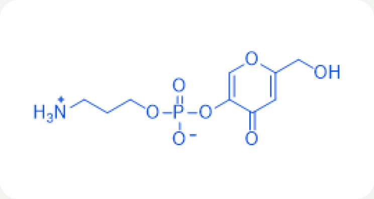

Ingredient research
Whitegen
안정화된 코직산 유도체
01 / Overview & Strengths
개요 & 특장점
코직산 유도체 이며 피부를 전체적으로 밝게 만들어주는 미백 원료 입니다. 피부 미백제인 ‘코직산(Kojic acid)’은 공기에 산화되면 안정도가 깨지고 색이 변하기 쉬운 단점이 있는데, 당사에서는 이를 3-APPA 결합으로 안정화 시켜 화장품에 적용이 용이하게끔 만들었습니다.
※ 자세한 자료는 직접 문의 부탁드립니다.
Product features / Product Strengths
- 미백 효과
- 항산화 효과
- 항균 효과

02 / Technical Information
기술 자료
Product Name : Whitegen
원료 기본 규격 및 제품 카탈로그
- INCI Name
- Aminopropyl Kojyl Phosphate
- CAS No.
- 472965-63-2
- M.O.Q.
- 1KG
- Pack Size
- 1KG
- Appearance
- Powder
- Dosage
- Min. 0.5~2%
※ 운영 사이트의 공개 정보를 반영했습니다. 자세한 자료는 직접 문의 부탁드립니다.